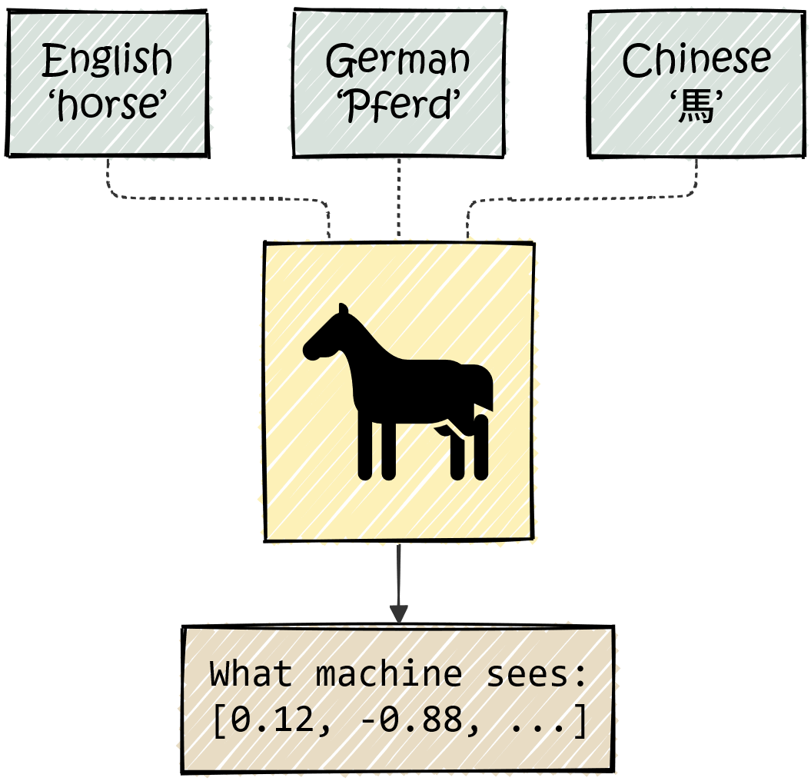

---
config:
themeVariables:
fontFamily: "monospace"
flowchart:
nodeSpacing: 8
rankSpacing: 25
padding: 10
---
flowchart BT
Input("Raw Text<br>'the ring fell'")
subgraph Tokenize[" Tokenization"]
direction BT
T1("the")
T2("ring")
T3("fell")
ID1("101")
ID2("205")
ID3("310")
end
Output("Token IDs<br>[101, 205, 310]")
Input --> Tokenize --> Output
T1 -.-> ID1
T2 -.-> ID2
T3 -.-> ID3
%% Styles
style Input fill:#d8e2dc,stroke:#5b7065,color:#2a3630,stroke-width:2px
style Tokenize fill:#fdf1b8,stroke:#9a832d,color:#4a3b2c
style T1 fill:#fff,stroke:#4a3b2c
style T2 fill:#fff,stroke:#4a3b2c
style T3 fill:#fff,stroke:#4a3b2c
style ID1 fill:#fff,stroke:#4a3b2c
style ID2 fill:#fff,stroke:#4a3b2c
style ID3 fill:#fff,stroke:#4a3b2c
style Output fill:#e8dcc4,stroke:#4a3b2c,color:#4a3b2c
1 Text, Tokens, and Numbers
1.1 Machines Need Numbers

Before a Transformer can answer questions or write novels, text must be turned into numbers. To a computer, text is not meaning — it is just a sequence of bytes.
Consider the word “horse.”
The letters h-o-r-s-e do not inherently imply a hoofed mammal that runs fast. In German, the same animal is “Pferd.” In Chinese, it is “馬.” The spellings are completely different, yet they refer to the same real-world creature — they are just symbols that represent the same concept.
Artificial neural networks, the core components of AI models, operate on numbers rather than not symbols. So before a model can process language, we must convert text into numbers.
What We Need
We need a systematic way to convert text into numerical vectors such that:
- Every piece of text maps to a specific numerical representation.
- The format is consistent (the model always receives the same input shape).
This conversion process has three stages.
1.2 Text → Tokens → Vectors
Consider the input: "the ring fell"
1.2.1 Stage 1: The Breaking of the Text
First, we must break the text into smaller units — tokens (For simplicity, think of it as individual words). Each token is then mapped to a unique integer ID via a static lookup table (the vocabulary).
This process is called tokenization.
NoteWhat is the “Vocabulary”?
In everyday language, vocabulary refers to the words a person knows. In NLP, the Vocabulary (\(V\)) is the fixed, finite list of all unique tokens the model knows.
Think of it as a dictionary where every entry is assigned a specific number (ID).
- Size: Typical vocabularies contain 30,000 to 100,000 unique tokens.
- Fixed: Once training starts, the vocabulary cannot change.
NoteConcerning Tokenization
We can tokenize text in three ways:
- Character-level: Split “the” into
['T', 'h', 'e'].- Issue: Sequences become too long, and the model must learn spelling from scratch.
- Word-level: Split “the ring fell” into
['the', 'ring', 'fell'].- Issue: The vocabulary explodes (hundreds of thousands of words), and unknown words like “riing” cause errors.
- Subword-level (The Modern Standard):
- Common words remain whole (“ring” →
['ring']). - Rare words are split into meaningful chunks (“transformer” →
['trans', 'former']).
- Common words remain whole (“ring” →
Modern models use Subword Tokenization, which strikes a balance between vocabulary size and meaning.
Most models use Byte-Pair Encoding (BPE). It starts with individual characters and iteratively merges the most frequent adjacent pairs until a target vocabulary size is reached (e.g., 50,000). This strikes the perfect balance between efficiency and meaning.
TipNote: Special Tokens
Beyond words, models use special tokens to mark structure or unknown words:
- [CLS]: Classification summary (BERT).
- [SEP]: Separator between sentences.
- [MASK]: Placeholder for prediction.
- [PAD]: Padding for batching.
- [UNK]: Unknown word.
1.2.2 Stage 2: Embedding
We cannot feed raw token IDs (e.g., [101, 205, 310]) directly into a neural network because they imply false mathematical relationships (e.g., 310 > 101 suggests “fell” is somehow “greater than” “the”).
Instead, we convert each ID into a vector of numbers using an embedding matrix.
What Is the Embedding Matrix?
Think of the embedding matrix as a dictionary, but instead of definitions, each entry (i.e. each row) contains a list of numbers (an embedding vector), representing a token in the vocabulary:
\[ W_E \in \mathbb{R}^{|V| \times d_{model}} \]
- \(|V|\) = vocabulary size (number of entries in the dictionary)
- \(d_{model}\) = numbers of dimensions used to describe each token
- We’ll use \(d_{model} = 4\) throughout the book to keep examples consistent.
For our sequence “the ring fell” (3 tokens), we look up 3 rows from \(W_E\):
\[ E = \begin{bmatrix} 0.1 & 0.2 & 0.3 & 0.4 \\ 0.5 & 0.6 & 0.7 & 0.8 \\ 0.2 & 0.4 & 0.6 & 0.8 \end{bmatrix} \begin{matrix} \leftarrow \text{``the" (ID: 101)} \\ \leftarrow \text{``ring" (ID: 205)} \\ \leftarrow \text{``fell" (ID: 310)} \end{matrix} \]
Intuitively, each row represents a token’s unique identity—a numerical fingerprint that says what it is, but not yet what it means here.
What Do These Numbers Represent?
Each number in a token’s embedding vector describes the token along one dimension (a.k.a. feature). You can think of it like this: just as a person might be described (and thus identified) along multiple dimensions like height, age, hair color, a token is described along some learned dimensions.

Note that the embedding matrix only helps us identify a token, but not understand it. For example, the vector for ring might encode properties like:
common English word,
can function as noun or verb,
has certain phonetic properties,
frequently co-occurs with words like X, Y, Z...But this vector doesn’t tell us whether “ring” means jewelry or sound in any particular sentence: Meaning requires context, which we don’t have yet.
NoteAre Embedding Features Human-Interpretable?
Not really. Unlike a dictionary definition you can read, these features are learned patterns that emerge from training on massive amounts of text. Dimension 47 might correlate with “noun-ness” and dimension 203 with “abstract vs. concrete,” but we can’t easily inspect them.
What we can say: tokens with similar identities end up with similar vectors. “King” and “queen” will be closer together than “king” and “banana”—not because someone programmed royalty features, but because they appear in similar contexts during training.
NoteHistorical Note: Word2Vec and Static Embeddings
The idea of representing words as vectors predates Transformers. In 2013, Word2Vec demonstrated that you could learn embeddings where arithmetic worked: vector(“king”) - vector(“man”) + vector(“woman”) ≈ vector(“queen”).
These were revolutionary but static—each word had exactly one vector, regardless of context. The word “ring” would get a single embedding averaging across all its uses (jewelry, sound, boxing ring, tree ring…).
Transformers start with similar static embeddings but then update them based on context—which is exactly what the next chapter will introduce.
1.2.3 Stage 3: Positional Encoding
If we input “fell ring the” instead of “the ring fell,” the embedding matrix simply swaps rows. Because the Transformer processes all tokens simultaneously (permutation invariance), it cannot inherently distinguish “dog bites man” from “man bites dog.”
The Solution: We inject position information by adding a position-specific vector (\(P\)) to each token embedding (\(E\)).
\[X = E + P\]
Now, each embedding in the ouput matrix, \(X\), captures what properties the token carries and where it is located. In the next chapter, we will see how transformers use this matrix to understand the text.
TipTechnical Detail: The Math of Position
Original Transformers used fixed sinusoidal functions:
\[PE_{(pos, 2i)} = \sin\left(\frac{pos}{10000^{2i/d_{model}}}\right)\]
This allows the model to learn relative positions (e.g., “attend to the word 3 steps back”). Modern models often use learned positional embeddings or Rotary Positional Embeddings (RoPE).
Why Add and not Concatenate? Adding preserves dimensionality (\(d_{model}\)) for efficiency. In high-dimensional space, semantic and positional information are easily separable by the model.
1.2.4 The Journey Thus Far
We have converted text into a numerical matrix \(X\) of shape \((N \times d_{model})\).
---
config:
themeVariables:
fontFamily: "monospace"
flowchart:
nodeSpacing: 35
rankSpacing: 25
padding: 10
---
flowchart BT
A("Raw Text<br>'the ring fell'")
B[["Tokenization"]]
C("Token IDs<br>")
D[["Embedding Lookup"]]
E("Token Embeddings (E)<br>(3 × d<sub>model</sub>)")
F("Position IDs<br>")
G[["Positional Encoding"]]
H("Position Vectors (P)<br>(3 × d<sub>model</sub>)")
I(("\+"))
J("Matrix X<br>(3 × d<sub>model</sub>)")
A --> B --> C --> D --> E --> I
F --> G --> H --> I
I --> J
style A fill:#d8e2dc,stroke:#5b7065,color:#2a3630,stroke-width:2px
style J fill:#d8e2dc,stroke:#5b7065,color:#2a3630,stroke-width:2px
style B fill:#fdf1b8,stroke:#9a832d,color:#4a3b2c
style D fill:#fdf1b8,stroke:#9a832d,color:#4a3b2c
style G fill:#fdf1b8,stroke:#9a832d,color:#4a3b2c
style I fill:#fdf1b8,stroke:#9a832d,color:#4a3b2c
style C fill:#e8dcc4,stroke:#4a3b2c,color:#4a3b2c
style E fill:#e8dcc4,stroke:#4a3b2c,color:#4a3b2c
style F fill:#e8dcc4,stroke:#4a3b2c,color:#4a3b2c
style H fill:#e8dcc4,stroke:#4a3b2c,color:#4a3b2c
1.3 The “Ring” Problem
We can now convert any text into a numerical matrix \(X\), where each token is represented by a row vector.
1.3.1 What’s Missing?
There is no context in each token’s representation. Consider the word “ring”:
- “The ring of the telephone woke her up.”
- “He wore a golden ring on his finger.”
In the first sentence, “ring” is a sound. In the second, it’s jewelry. Yet in our current pipeline, both instances map to the exact same vector. The embedding matrix has only one row for “ring”: a static representation that captures the “average” meaning of the word across all its uses.
This is the core limitation: each token’s vector is computed in isolation. It encodes identity and position, but nothing about surrounding tokens (the context). Whether “telephone” or “golden” appears nearby, the representation of “ring” doesn’t change. All possible meanings remain collapsed into a single point—and a model that can’t resolve such ambiguities will fail at basic comprehension.
1.3.2 What Comes Next
The next chapter introduces Self-Attention, the mechanism that finally incorporates context into each token’s representation.
For “ring,” this means:
- In “The ring of the telephone,” the presence of “telephone” pulls the representation of “ring” toward its sound-meaning.
- In “He wore a golden ring,” the presence of “golden” pulls the representation of “ring” toward its jewelry-meaning.
The static identity vectors we built here—the matrix \(X\)—will be transformed into dynamic, contextual representations. Identity becomes meaning. But that is a tale for another chapter.
1.4 Summary
1.4.1 The Pipeline So Far
- Tokenization
- Input: Raw text (
"the ring fell") - Output: Token IDs (
[101, 205, 310])
- Input: Raw text (
- Embedding Lookup
- Input: Token IDs
- Output: Token embeddings \(E\) with shape \((N \times d_{model})\)
- Positional Encoding
- Input: Position indices (
[0, 1, 2]) - Output: Position vectors \(P\) with shape \((N \times d_{model})\)
- Input: Position indices (
- Addition
- Input: \(E\) and \(P\)
- Output: Input matrix \(X\) with shape \((N \times d_{model})\)
1.4.2 Key Symbols
| Symbol | Name | Typical Shape |
|---|---|---|
| \(N\) | Sequence length | Scalar (e.g., 512, 2048) |
| \(d_{model}\) | Model dimension | Scalar (e.g., 768, 4096) |
| \(\|V\|\) | Vocabulary size | Scalar (e.g., 50,000) |
| \(W_E\) | Embedding matrix | \(\|V\| \times d_{model}\) |
| \(E\) | Token embeddings | \(N \times d_{model}\) |
| \(P\) | Positional encodings | \(N \times d_{model}\) |
| \(X\) | Input matrix | \(N \times d_{model}\) |